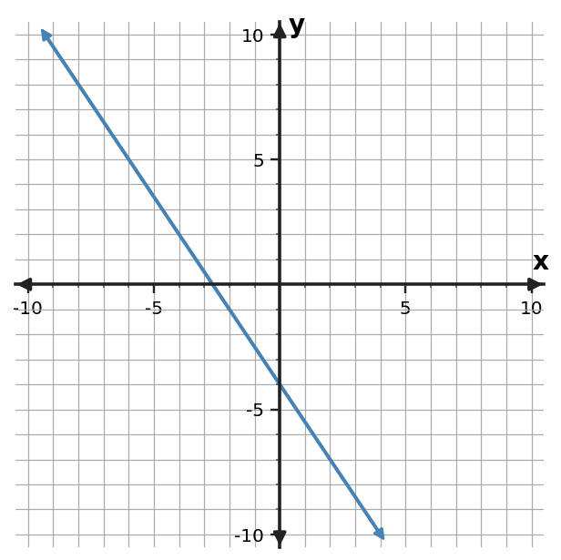
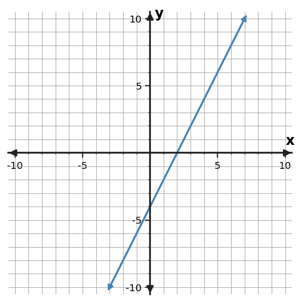
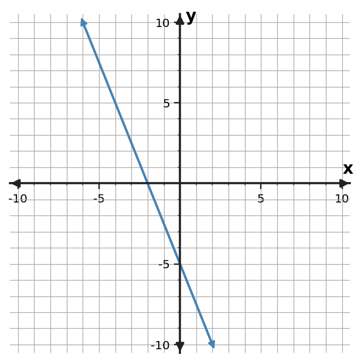

1. Find the slope of the line through $(-6,1)$ and $(0,1)$.
1. Find the slope of the line through $(-6,1)$ and $(0,1)$.
2. Find the slope of the line through $(-3,1)$ and $(1,9)$.
3. Find the slope of the line through $(-4,-2)$ and $(2,1)$.
4. Use the table to determine the constant rate of change in $y$ per 1 unit of $x$.
| $x$ | $y$ |
|---|---|
| $0$ | $0$ |
| $2$ | $6$ |
| $4$ | $12$ |
| $6$ | $18$ |
5. Use the table to determine the constant rate of change in $y$ per 1 unit of $x$.
| $x$ | $y$ |
|---|---|
| $0$ | $2$ |
| $2$ | $3$ |
| $4$ | $4$ |
| $6$ | $5$ |
6. Use the table to determine the constant rate of change in $y$ per 1 unit of $x$.
| $x$ | $y$ |
|---|---|
| $0$ | $-3$ |
| $2$ | $5$ |
| $4$ | $13$ |
| $6$ | $21$ |
7. Determine the slope of the line shown. Use two grid points to support your calculation.

8. Determine the slope of the line shown. Use two grid points to support your calculation.

9. Determine the slope of the line shown. Use two grid points to support your calculation.

10. A printer produces 72 pages in 6 minutes at a constant rate. What is the rate in pages per minute?
11. The temperature rises 18 degrees over 6 hours. What is the constant rate in degrees per hour?
12. A hiker loses 24 meters of elevation over 8 minutes. What is the constant rate of elevation change in meters per minute?
13. Classify the slope of a line through $(4,-2)$ and $(4,9)$.
14. A line rises 7 units while moving 3 units to the right. Classify its slope.
15. A line falls 5 units while moving 2 units to the right. Classify its slope.
16. For the line $y=4x-7$, a student says the slope is $-7$. Identify the error.
17. In a table, $x$ increases by 2 while $y$ increases by 8. A student reports the rate of change as 8. Correct the rate.
18. A student says a vertical line has slope 0 because its $x$-value never changes. Correct the claim.
19. The rule is $y=-x-2$. Complete the input-output values and name one ordered pair generated by the rule.
| Input $x$ | Output $y$ |
|---|---|
| $-1$ | $-1$ |
| $0$ | $-2$ |
| $2$ | $-4$ |
20. The rule is $y=5x+4$. Complete the input-output values and name one ordered pair generated by the rule.
| Input $x$ | Output $y$ |
|---|---|
| $-1$ | $-1$ |
| $0$ | $4$ |
| $2$ | $14$ |
21. The rule is $y=2x-7$. Complete the input-output values and name one ordered pair generated by the rule.
| Input $x$ | Output $y$ |
|---|---|
| $-1$ | $-9$ |
| $0$ | $-7$ |
| $2$ | $-3$ |
22. Determine whether the table shows a constant rate of change. If it does, state the rate.
| $x$ | $y$ |
|---|---|
| $0$ | $-5$ |
| $2$ | $-1$ |
| $4$ | $3$ |
| $6$ | $7$ |
23. Determine whether the table shows a constant rate of change. If it does, state the rate.
| $x$ | $y$ |
|---|---|
| $0$ | $2$ |
| $2$ | $3$ |
| $4$ | $4$ |
| $6$ | $5$ |
24. Determine whether the table shows a constant rate of change. If it does, state the rate.
| $x$ | $y$ |
|---|---|
| $0$ | $1$ |
| $2$ | $5$ |
| $4$ | $9$ |
| $6$ | $14$ |